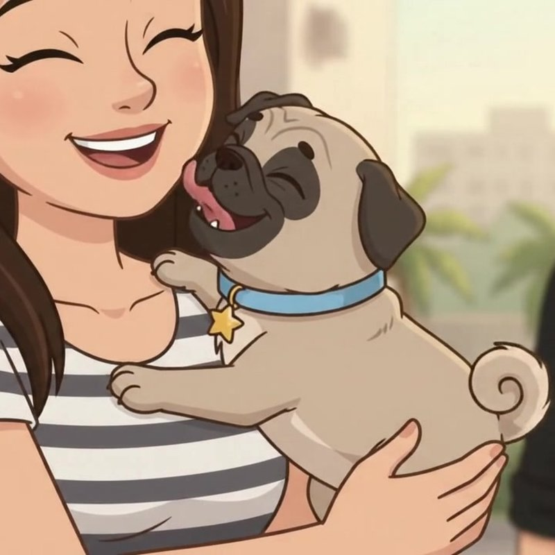
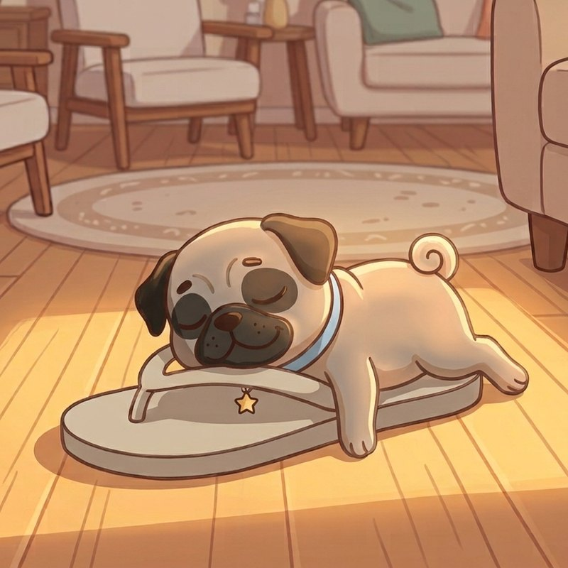
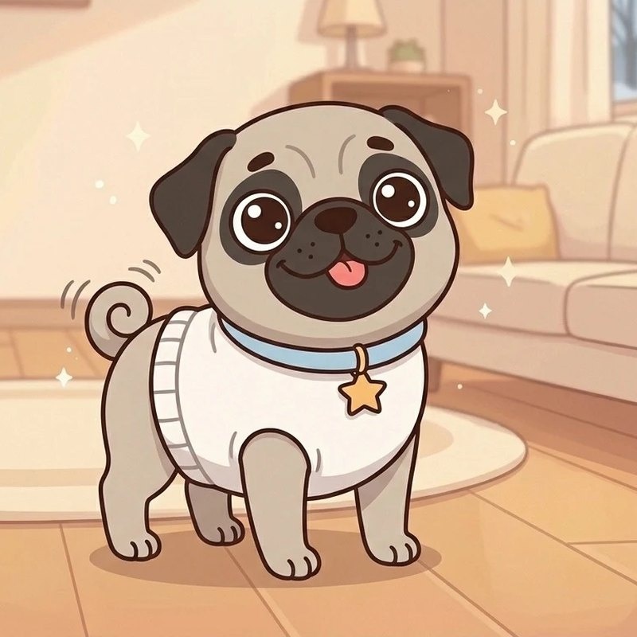
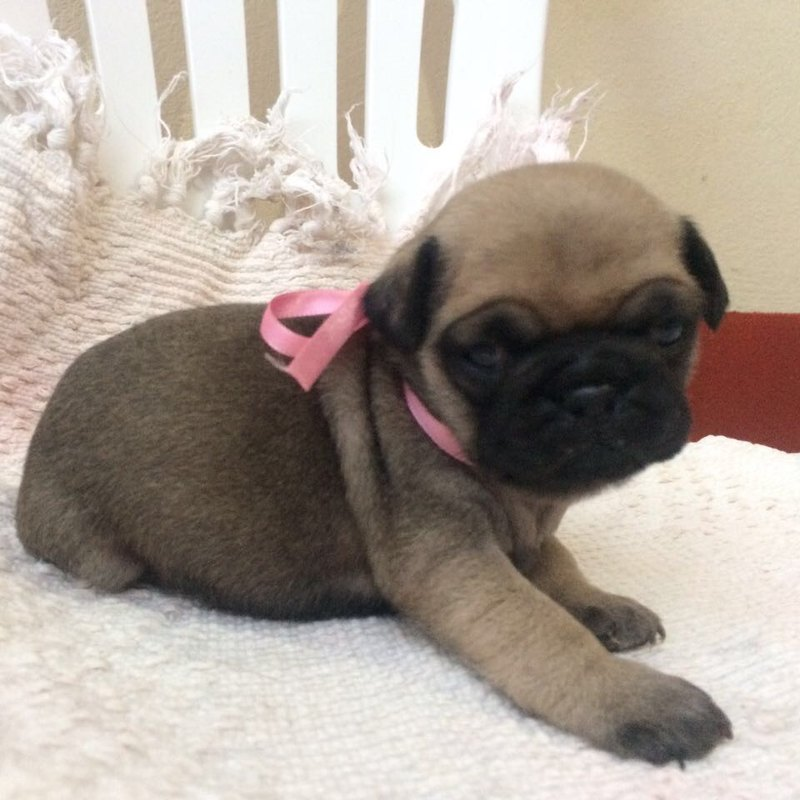
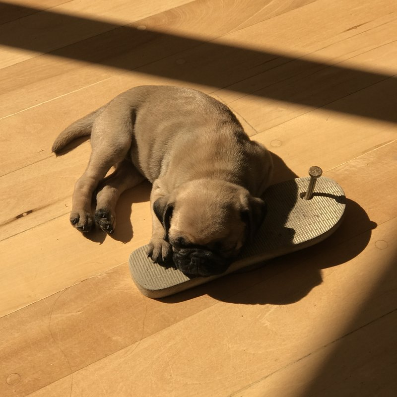
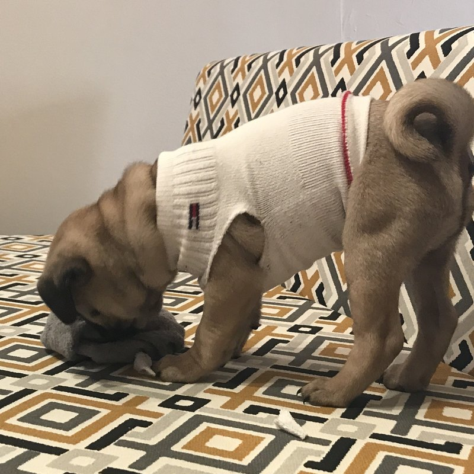
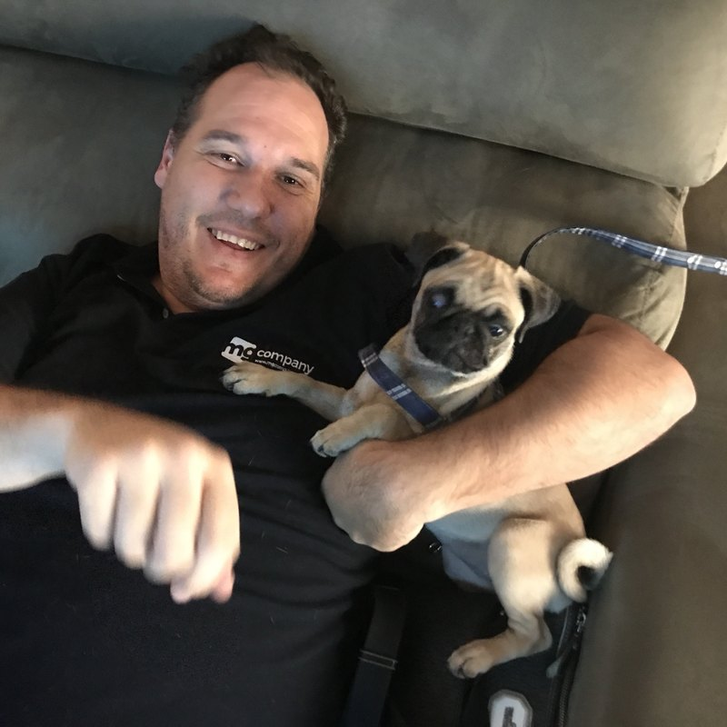
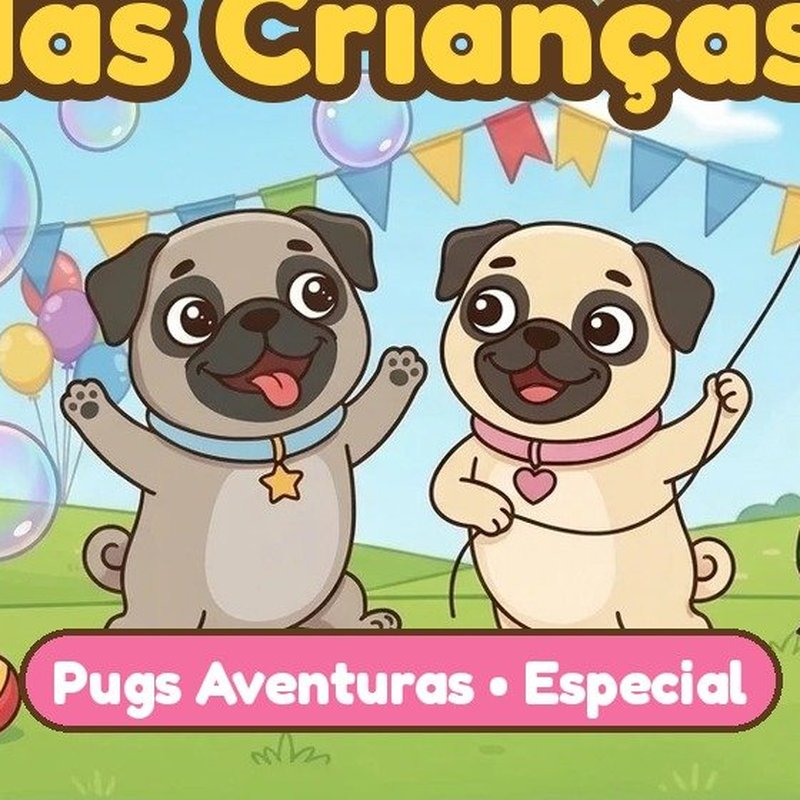
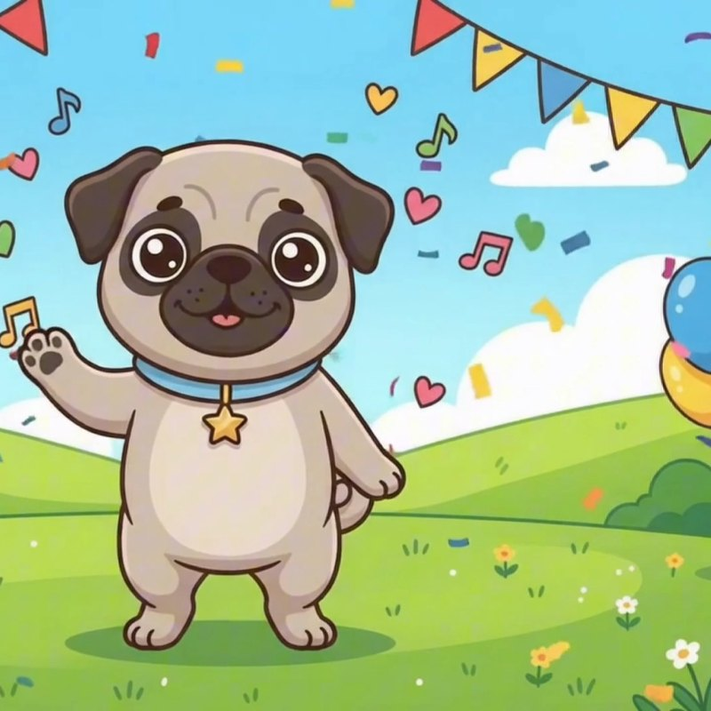
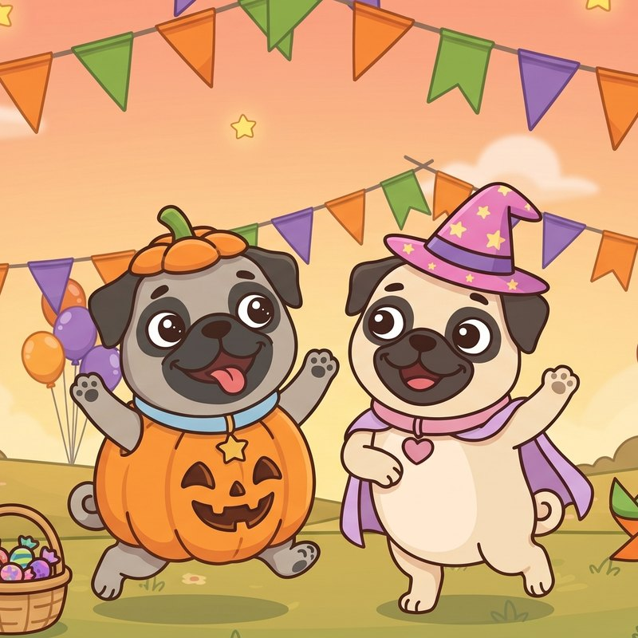

Figurinha #1
Figurinha #1
Assista ao Episódio 1 na quarta, 07/10, para colar esta figurinha!
Pugs Aventuras
A cada episódio, uma figurinha nova e uma foto da Joy de verdade! ⭐ As douradas são especiais.
Figurinha #1
Assista ao Episódio 1 na quarta, 07/10, para colar esta figurinha!
Figurinha #2
Assista ao Episódio 2 na quarta, 14/10, para colar esta figurinha!
Figurinha #3
Assista ao Episódio 3 na quarta, 21/10, para colar esta figurinha!
Figurinha #4
Assista ao Episódio 4 na quarta, 28/10, para colar esta figurinha!
Vem aí num episódio novo!
Vem aí num episódio novo!
Vem aí num episódio novo!
Vem aí num episódio novo!
Fotos de verdade da Joy! A cada episódio, uma foto nova de como tudo aconteceu.

Assim era a Joy de verdade quando chegou: pequenininha! 💛
Assista ao Episódio 1 para ganhar esta foto!

A Joy de verdade dormindo em cima do chinelo do papai. 💤
Assista ao Episódio 2 para ganhar esta foto!

A Joy de verdade com a roupinha feita da meia do papai! 🧦
Assista ao Episódio 3 para ganhar esta foto!

O papai que não queria cachorro virou o melhor amigo da Joy! 💙
Assista ao Episódio 4 para ganhar esta foto!
Vem aí num episódio novo!
Vem aí num episódio novo!
As especiais são douradas e aparecem nas datas e nas músicas da Joy e da Jane.

Especial do Dia das Crianças

Música Tchau Lambeijo
Música de abertura: vem aí no fim de semana!

A Joy de abobrinha e a Jane de bruxinha numa festa sem susto nenhum!
Música de Halloween: chega dia 29/10!
Próxima data especial